Get started
Getting-started
For first-time users of the MXChip IoT DevKit (a.k.a. DevKit), follow these quick steps to:
- Prepare your development environment.
- Send temperature and humidity data from built-in IoT DevKit sensors to the Azure IoT Hub.
If you have already done this, you can try more samples from the Projects Catalog or build your own IoT application.
What you learn
- How to connect the IoT DevKit to a wireless access point.
- How to install the development environment.
- How to create an IoT Hub and register a device for the IoT DevKit.
- How to collect sensor data by running a sample application on the IoT DevKit.
- How to send the IoT DevKit sensor data to your IoT hub.
What you need
- An MXChip IoT DevKit. Get it now.
- A computer running Windows 10 or macOS 10.10+.
- An active Azure subscription. Activate a free 30-day trial Microsoft Azure account.
- Required Hardware
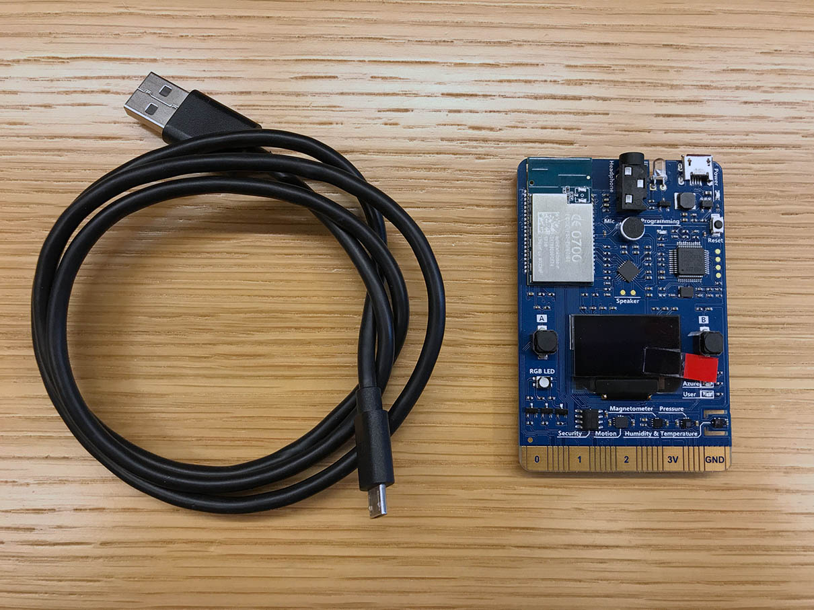
Prepare your hardware
To connect the IoT DevKit to your computer:
- Connect the Micro-USB end to the IoT DevKit.
- Connect the USB end to your computer.
- The green LED for power confirms the connection.
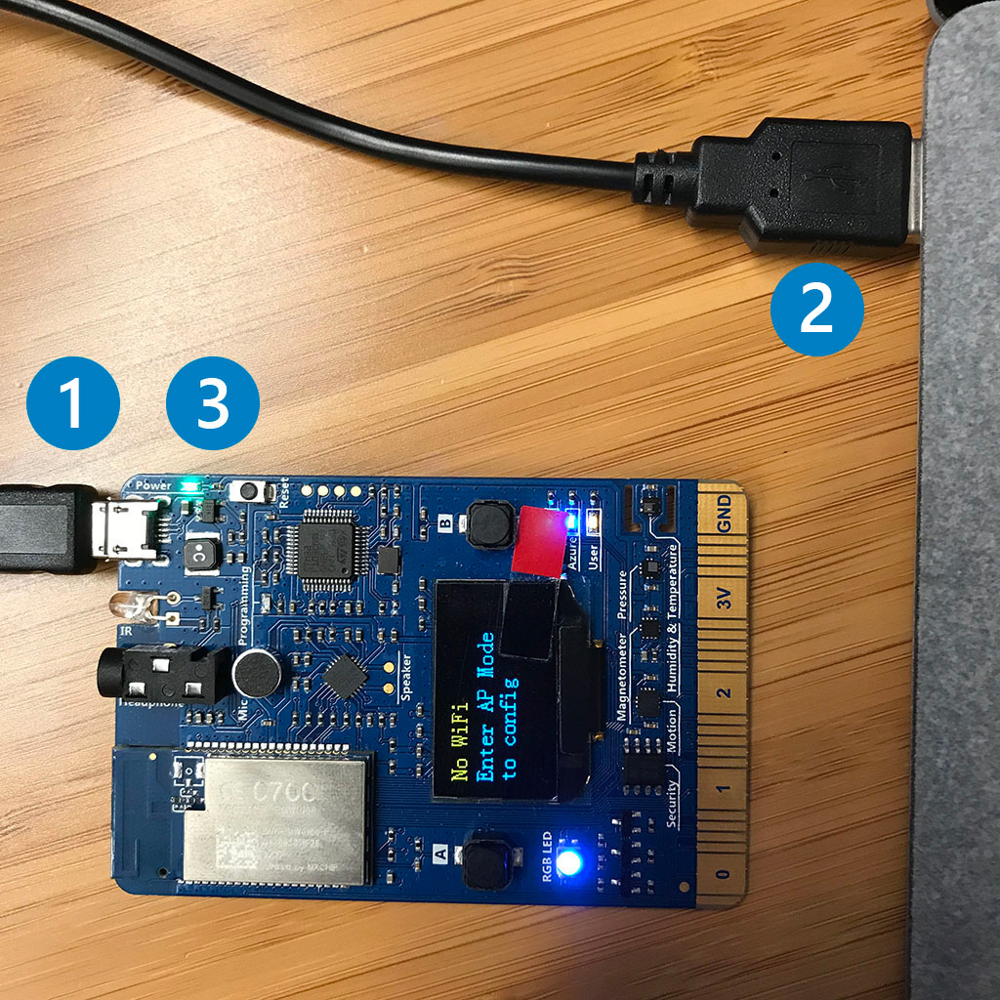
Configure Wi-Fi
IoT projects rely on internet connectivity. Use the following instructions to configure the DevKit to connect to Wi-Fi.
-
Hold down button B, push and release the reset button, and then release button B. Your IoT DevKit enters AP mode for configuring the Wi-Fi connection. The screen displays the service set identifier (SSID) of the IoT DevKit and the configuration portal IP address:
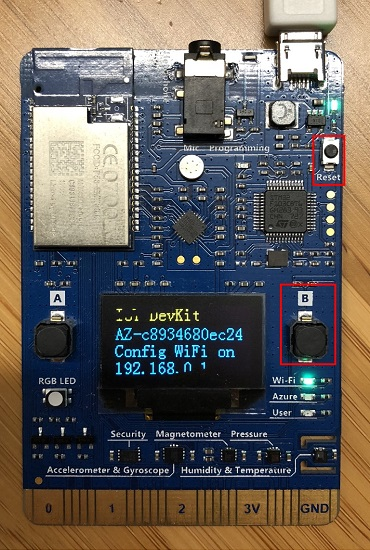
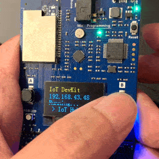
-
Use a Web browser on a different Wi-Fi enabled device (computer or mobile phone) to connect to the IoT DevKit SSID displayed in the previous step. If it asks for a password, leave it empty.
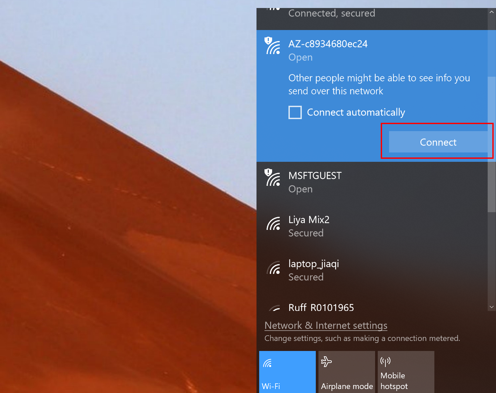
-
Open 192.168.0.1 in the browser. Select the Wi-Fi network that you want the IoT DevKit to connect to, type the password for the Wi-Fi conection, and then click Connect.
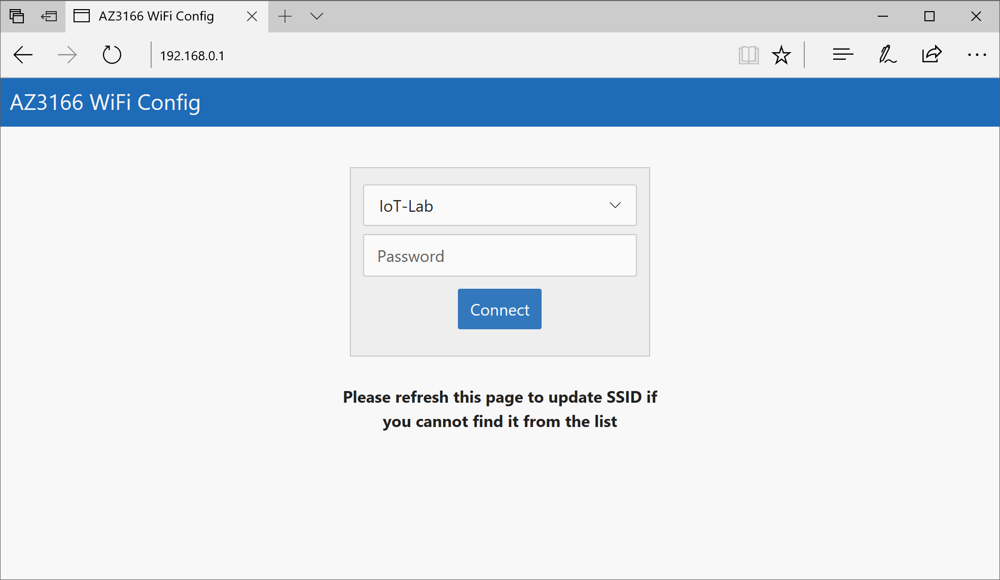
-
The IoT DevKit reboots in a few seconds. You then see the Wi-Fi name and assigned IP address on the screen of the IoT DevKit:
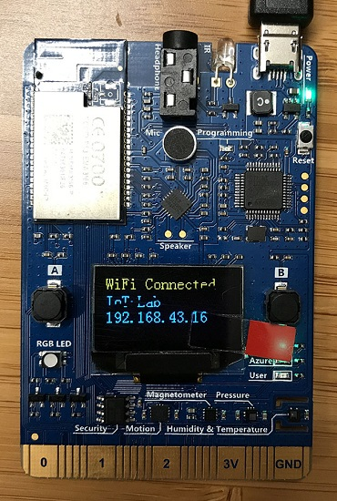
Start using the DevKit
Upgrade to the latest firmware
The default app running on the DevKit checks the latest version of the firmware and displays some sensor diagnosis data for you. The currently-installed and latest available version of the IoT DevKit’s firmware is displayed on the IoT DevKit screen. If the IoT DevKit is not running on the latest available version, follow the firmware upgrading guide to install the latest version.
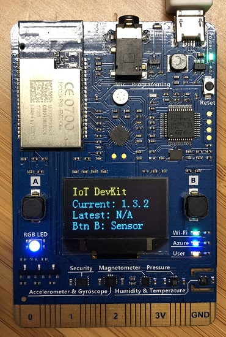
**Note:** Since v1.1, DevKit enables ST-SAFE in the bootloader.
You must upgrade the firmware if you are running a version prior to v1.1.
Test various sensors
Press button B to test the sensors. Continue pressing and releasing the button B to cycle through each sensor.
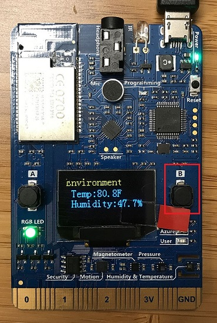
Prepare the development environment
We recommend Azure IoT Tools extension pack for Visual Studio Code to develop on the DevKit. The Azure IoT Tools contains Azure IoT Device Workbench to develop and debug on various IoT devkit devices and Azure IoT Hub Toolkit to manage and interact with Azure IoT Hub.
You can watch these Channel 9 videos to have overview about what they do:
- Introduction to the new IoT Workbench extension for VS Code
- What’s new in the IoT Toolkit extension for VS Code
Follow these steps to prepare the development environment for DevKit:
- Install Arduino IDE. It provides the necessary toolchain for compiling and uploading Arduino code.
- Windows: Use Windows Installer version. Do not install from the app store.
- macOS: Drag and drop the extracted Arduino.app into
/Applicationsfolder. - Ubuntu: Unzip it into folder such as
$HOME/Downloads/arduino-1.8.8
-
Install Visual Studio Code, a cross platform source code editor with powerful developer tooling, like IntelliSense code completion and debugging.
-
Launch VS Code, look for Arduino in the extension marketplace and install it. This extension provides enhanced experiences for developing on Arduino platform.
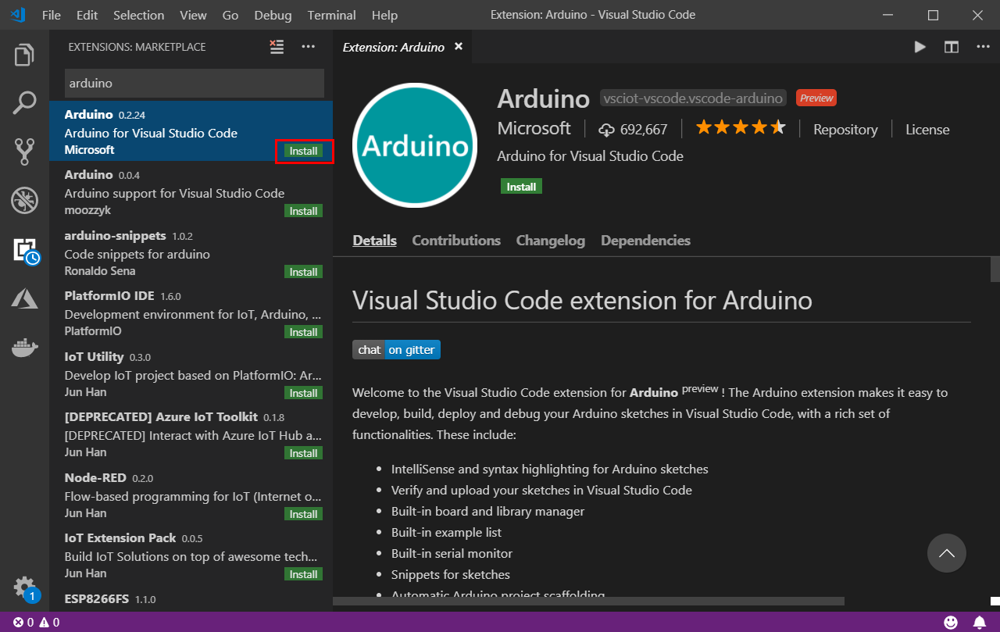
-
Look for Azure IoT Tools in the extension marketplace and install it.
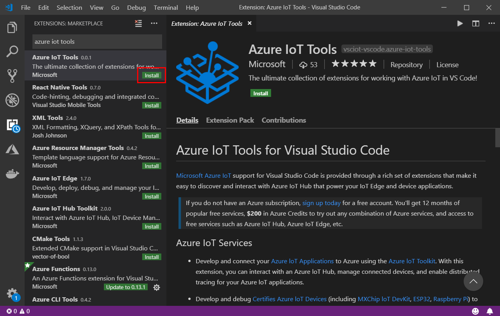
-
Configure VS Code with Arduino settings.
In Visual Studio Code, click File > Preference > Settings.
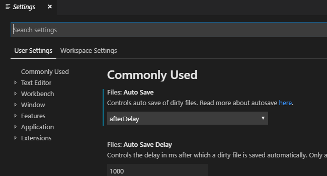
Type “Arduino” in the search textbox, the Arduino:Additional Urls is showed up, then click the hyperlink ‘Edit in settings.json’.
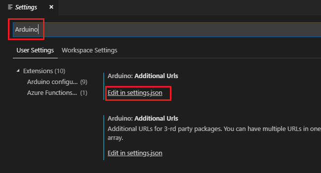
Make sure the
"arduino.path"and"arduino.additionalUrls"have been set correctly, if not please add following lines to configure Arduino depending on your platform:-
Windows:
"arduino.path": "C:\\Program Files (x86)\\Arduino", "arduino.additionalUrls": "https://raw.githubusercontent.com/VSChina/azureiotdevkit_tools/master/package_azureboard_index.json" -
macOS:
"arduino.path": "/Applications", "arduino.additionalUrls": "https://raw.githubusercontent.com/VSChina/azureiotdevkit_tools/master/package_azureboard_index.json" -
Ubuntu:
Replace the {username} placeholder below with your username.
"arduino.path": "/home/{username}/Downloads/arduino-1.8.8", "arduino.additionalUrls": "https://raw.githubusercontent.com/VSChina/azureiotdevkit_tools/master/package_azureboard_index.json"
-
-
Click
F1to open the command palette, type and select Arduino: Board Manager. Search for AZ3166 and install the latest version.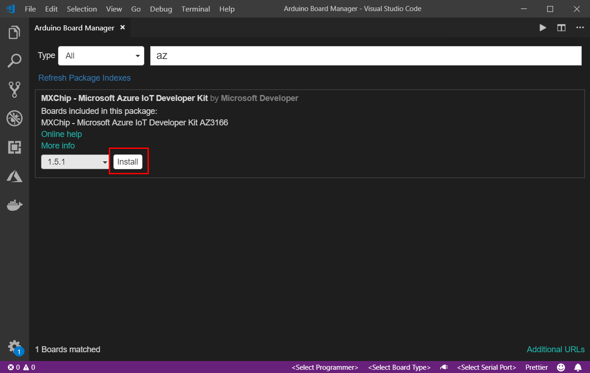
Install ST-Link drivers
ST-Link/V2 is the USB interface that IoT DevKit uses to communicate with your development machine. Follow the OS-specific steps to allow the machine access to your device.
- Windows: Download and install USB driver from STMicroelectronics website.
- macOS: No driver is required for macOS.
-
Ubuntu: Run the following in terminal and log out and log in for the group change to take effect:
# Copy the default rules. This grants permission to the group 'plugdev' sudo cp ~/.arduino15/packages/AZ3166/tools/openocd/0.10.0/linux/contrib/60-openocd.rules /etc/udev/rules.d/ sudo udevadm control --reload-rules # Add yourself to the group 'plugdev' # Logout and log back in for the group to take effect sudo usermod -a -G plugdev $(whoami)
Now you are all set with preparing and configuring your development environment. Let us build the “Hello World” sample for IoT: sending temperature telemetry data to Azure IoT Hub.
Build your first project
-
Make sure your IoT DevKit is not connected to your computer. Start VS Code first, and then connect the DevKit to your computer.
-
Click
F1to open the command palette, type and select Azure IoT Device Workbench: Open Examples…. Then select IoT DevKit as board. -
In the IoT Workbench Examples page, find Get Started and click Open Sample. Then selects the default path to download the sample code.
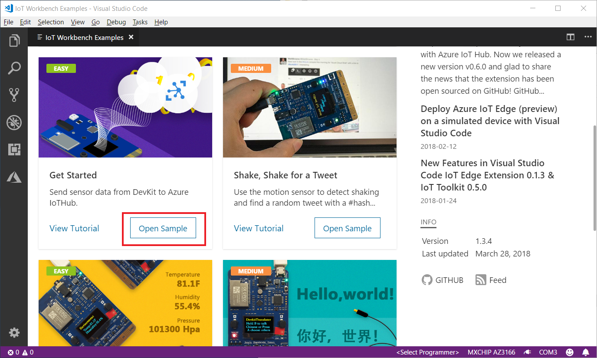
-
In the new opened project window, click
F1to open the command palette, type and select Azure IoT Device Workbench: Provision Azure Services…. Follow the step by step guide to finish provisioning your Azure IoT Hub and creating the IoT Hub device.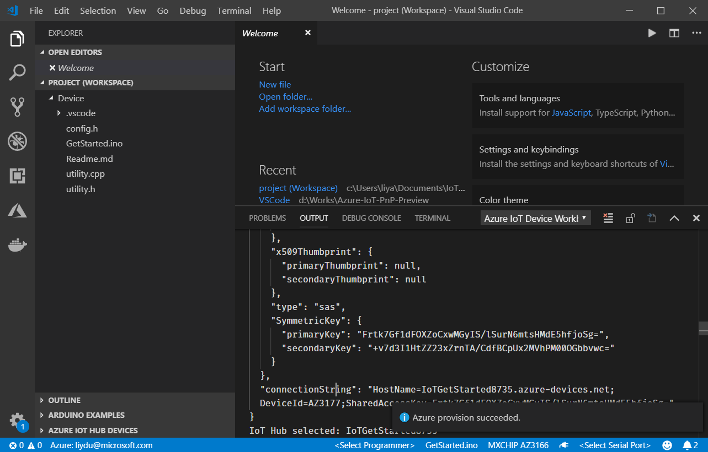
-
In the bottom-right status bar, check the MXCHIP AZ3166 is shown as selected board and serial port with STMicroelectronics is used.
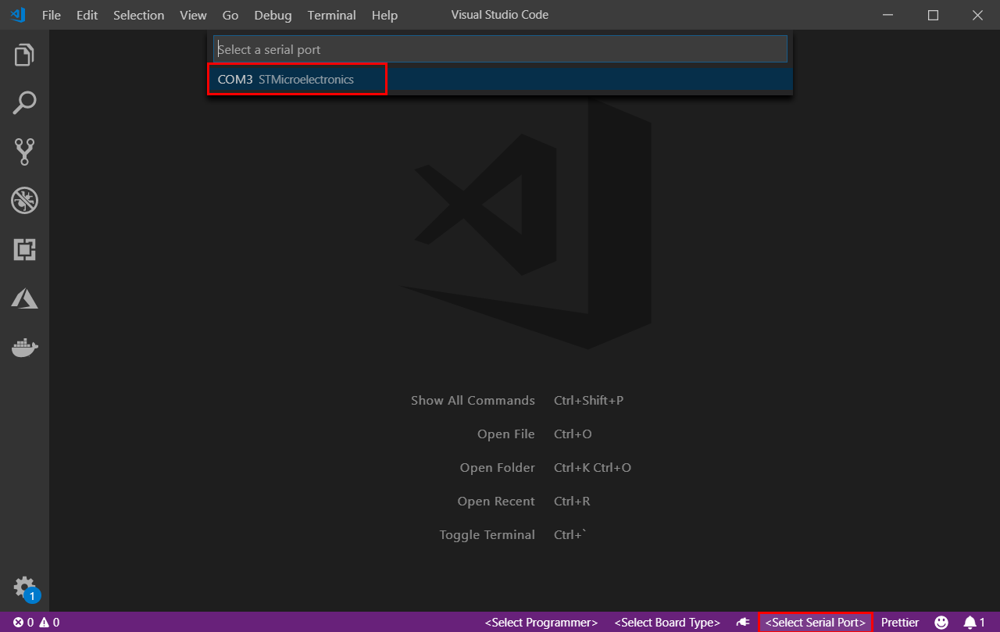
-
Click
F1to open the command palette, type and select Azure IoT Device Workbench: Configure Device Settings…, then select Config Device Connection String > Select IoT Hub Device Connection String. -
On DevKit, hold down button A, push and release the reset button, and then release button A. Your DevKit enters configuration mode and saves the connection string.
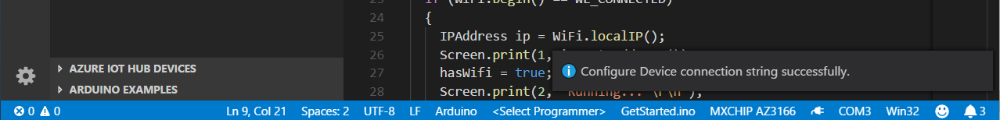
-
Click
F1again, type and select Azure IoT Device Workbench: Upload Device Code. It starts compile and upload the code to DevKit.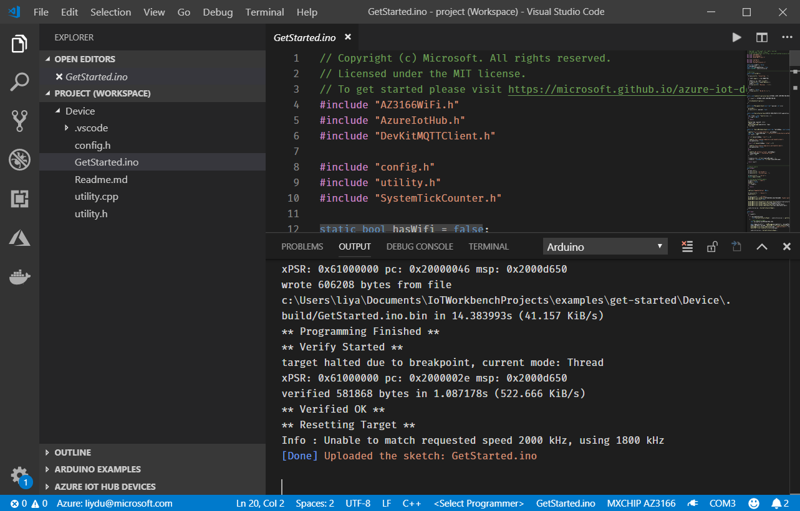
The DevKit reboots and starts running the code.
**Note:** If there is errors or interruptions, you can always recover by running the command again.
Test the project
Click the power plug icon on the status bar to open the Serial Monitor:

The sample application is running successfully when you see the following results:
- The Serial Monitor displays the message sent to the IoT Hub.
- The LED on the MXChip IoT DevKit is blinking.

You can use Azure IoT Toolkit to monitor device-to-cloud (D2C) messages in IoT Hub.
-
Log in Azure portal, find the IoT Hub you created.

-
In the Shared access policies pane, click the iothubowner policy, and write down the Connection string of your IoT hub.
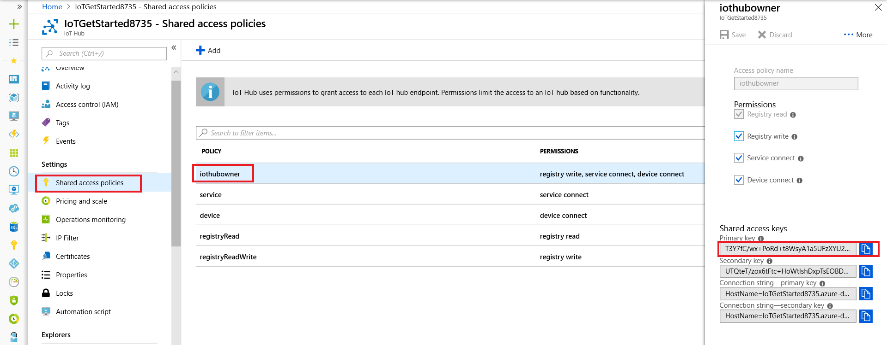
-
Expand AZURE IOT HUB DEVICES on the bottom left corner.

-
Click Set IoT Hub Connection String in context menu.

-
Click IoT: Start monitoring D2C message in context menu.
-
In OUTPUT pane, you can see the incoming D2C messages to the IoT Hub.

Problems and feedback
If you encounter problems, you can refer to FAQs or reach out to us from Gitter channel.
Was this documentation helpful?
Next Steps
You have successfully connected an MXChip IoT DevKit to your IoT hub, and you have sent the captured sensor data to your IoT hub. Check our Projects Catalog for more samples you can build with the IoT DevKit and Azure multiple services.